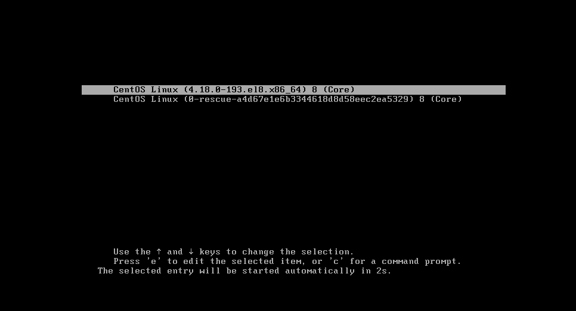
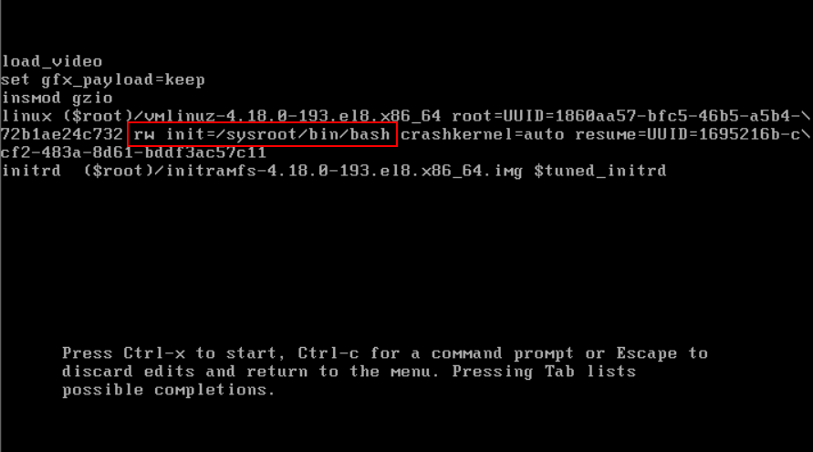
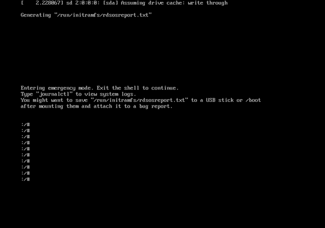
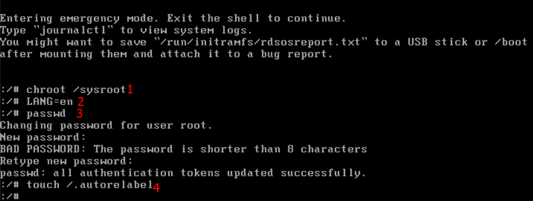
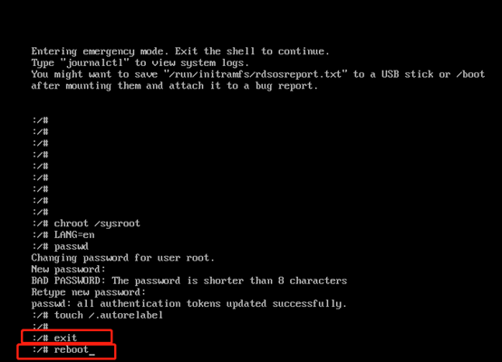
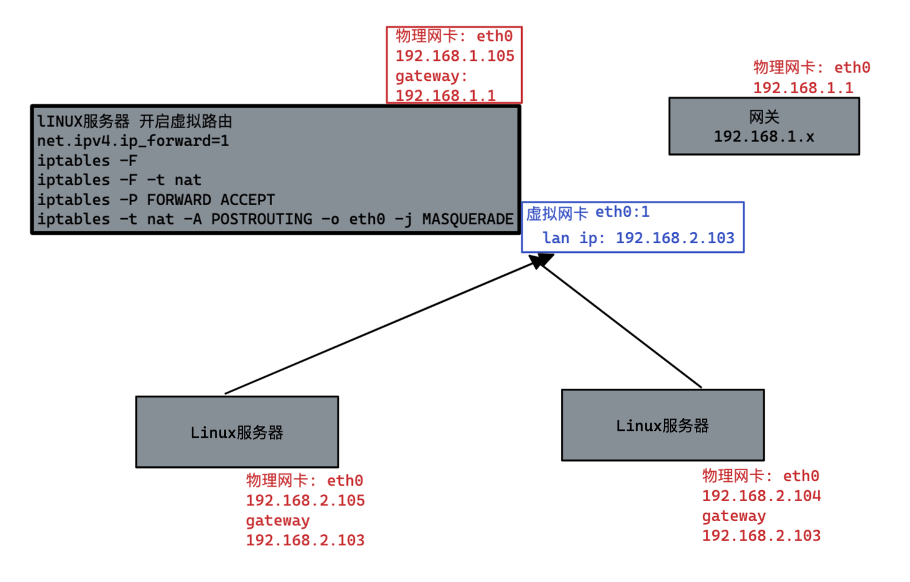
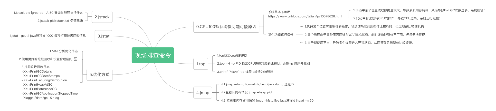

[TOC]
0.windows相关
0.0 windows关于端口查询&自启动目录
1 | 查看被占用的端口的进程 |
0.1 windows使用自带命令监听本地端口转发到其他服务器
1 | 这条命令会监听所有本地的3306端口的请求，并将它们转发到xx.xx.xx.xx的3306端口上。以管理员权限启动cmd |
0.2 hyper-v开启centos的虚拟化并安装docker的Windows镜像
1 | 1.开启hyper-v的centos虚拟机的KVM虚拟化 |
1.linux相关
1.1 hexo一键执行脚本
1 | !/bin/sh |
1.2 centos初始化
1 | 增加NDS解析 |
1.3 linux操作系统相关
1 | 1. 设置hostname名称 |
1.4 centos8 root用户忘记密码
1.启动centos8系统,在开机界面选择第一行，按e
- 
2.进入以下界面，找到ro并将其修改为rw init=/sysroot/bin/bash
- 
3.同时按住ctrl和x键，系统进入以下紧急模式界面
- 
4.输入以下命令修改密码
1
2
3
4chroot /sysroot/ #切换回原始系统
LANG=en #把语言改为英文
passwd #设置新密码
touch /.autorelabel #使密码生效
5.同时按住Ctrl和d键，进入以下界面，输入reboot，重启系统,直接使用新密码操作即可
- 
1.5 linux的初始化优化
1 | 1.设置主机名称 |
1.6 linux双网卡NAT路由映射
1 | 前提: |
1.7 主盘扩容(/dev/mapper/centos-root 空间不足)
1 | ls /dev/sd* #使用fdisk分区然后找一块空的分区 |
1.8 新增磁盘挂载
1 | 列出新的的磁盘 |
1.9 linux虚拟网卡和路由

https://www.linuxidc.com/Linux/2017-09/146914.htm
1 | 1.新增虚拟网卡,【或者直接使用虚拟机创建两个实体网卡】 |
windows增加路由,访问192.168.x.x的所有请求都经由192.168.176.1网关
1 |
|
1.10 增加或扩容swap
1 | ********创建和扩容************** |
1.11 centos下载应离线安装包
1 | #从功能定位上来说推荐使用方式1 |
1.12 linux查询系统进行被杀
1 | journalctl -xb | egrep -i 'killed process' |
2.虚拟机相关
2.1 virtual Boxs使用virtual host和nat网络固定ip
1.新建net网络(管理->全局设置->网络设置)
2.虚拟机新建网卡1virtual host(可以指定网址段)，设置网络类型为virtual host
3.虚拟机新建网卡2设置网络类型为NAT(选择新建的NAT网络,可以指定网址段)
4.固定NAT网络IP地址
编辑/etc/sysconfig/network-scripts/对应的网卡信息如果没有则新建
修改属性BOOTPROTO=static
修改属性NOBOOT=yes
新增属性(对应网卡的属性)
IPADDR=10.0.2.101
NETMASK=255.255.255.0
GATEWAY=10.0.2.1
5.同上固定virtual host连接的网络IP地址
virtual boxs上网
0.使用everthing的iso
1.使用NET网络选择准虚拟化网络(virtio-net),混杂模式拒绝
2.创建host-noly网络并选择选择准虚拟化网络(virtio-net),混杂模式拒绝
如果无法自动获取net和host-noly的ip,到/etc/sysconfig/network-scripts/目录下将这两个网卡的配置(ifcfg-xxx)删除然后重启
2.2 桥接网络虚拟机无法自动获取ip
dhclient 网卡 -v
2.3 virtual Boxs设置已存在的硬盘的大小
C:\Program Files\Oracle\VirtualBox\VBoxManage.exe modifyhd E:\vribox\k8s-temp\k8s-temp-disk1.vdi –resize 512000
2.4 实验室主机虚拟化软件
VMware ESXi 和 Proxmox 一般研发推荐Proxmox
2.5 pve 设置虚拟机分辨率
1 | 1.虚拟BIOS需要使用OVMF(UEFI),并再启动时候点击 esc键进入bios |
2.6 Hyper-V NAT 网络设置固定 IP / DHCP
以管理员身份启动PowerShell ，执行下列命令,创建NAT名称的网络，并在虚拟机的配置中选择此网络
1 | # 创建虚拟交换机 |
编辑虚拟机网络配置vim /etc/sysconfig/network-scripts/ifcfg-eth01
2
3
4
5
6
7
8
9
10
11
12
13
14
15
16
17
18TYPE=Ethernet
PROXY_METHOD=none
BROWSER_ONLY=no
BOOTPROTO=static
DEFROUTE=yes
IPV4_FAILURE_FATAL=no
IPV6INIT=yes
IPV6_AUTOCONF=yes
IPV6_DEFROUTE=yes
IPV6_FAILURE_FATAL=no
IPV6_ADDR_GEN_MODE=stable-privacy
NAME=eth0
UUID=3b8a4cf0-252f-4cc5-9e23-eebd73a37185
DEVICE=eth0
ONBOOT=yes
IPADDR=192.168.56.101
GATEWAY=192.168.56.254
DNS1=223.5.5.5
重启网络
1 | service network restart |
3.数据库相关
3.1 mysql数据库常用操作
1 | -- 重置root密码,并刷新权限 |
3.2 数据库问题排查语句
3.2.1 数据库诊断命令
1 | show processlist |
3.3.2 数据库死锁排查语句
1 | # 查看当前连接 |
3.3.3 数据库慢查询链接数过多CPU升高排查语句
1 | -- ***Mysql 开启慢查询***---- |
3.3 mysqldump常用命令
1 | 备份全部数据库（包含存储过程、自定义函数及事件） |
4.容器相关
4.1 命令相关
1 | 1.列出所有的容器 ID |
4.2 安装docker和minikube
1 | 1.创建非root用户 |
4.3 安装jenkins
1 | docker pull jenkins/jenkins |
4.4 自定义jenkins的镜像
当前目录下存在: config Dockerfile glibc-2.23-r3.apk kubectl settings.xml 文件
1 | FROM jenkins/jenkins:alpine |
执行容器命令启动
1 | docker run -d -p 10240:8080 -p 10241:50000 -v /root/test/jenkins:/var/jenkins_home -v /etc/localtime:/etc/localtime -v "/var/run/docker.sock:/var/run/docker.sock:rw" --name myjenkins f7b60faddb9e |
4.5 运行的容器制作成镜像，以及镜像打包和推送到远程仓库
1 | 结尾添加"非安全的 IP地址\域名" |
4.6 docker-compose安装grafana和prometheus
1 | version: '2.1' |
4.7 基于ubuntu机器学习的环境Dockerfile
1 | FROM ubuntu:21.10 |
4.8 已存在的容器调试方法
有些三方的镜像已经被构建且没有构建相关的Dockerfile，但是我们又想调试可以尝试覆盖进入命令进行覆盖启动
别忘了同步修改暴露5005端口
1 | 1.使用docker inspect获取启动的cmd或者Entrypoint命令 |
还可以使用修改启动镜像命令的方式覆盖启动命令
1 | docker run -p 5005:5005 --entrypoint new-entrypoint.sh image_name |
4.9 容器代理
dockerd 设置网络代理
1 | mkdir -p /etc/systemd/system/docker.service.d |
docker 容器设置网络代理
1 | vim ~/.docker/config.json |
Docker客户端使用代理
1 | vim ~/.docker/config.json |
docker build 过程设置网络代理
1 | 第一种方式启动时候指定变量 |
5.大数据相关
5.1 kafka相关
集群相关配置
zookeeper
1
2
3
4
5
6
7
8重要配置，需要在此目录下生成myid文件,即为集群标记
dataDir=/mnt/data/
zk链接端口
clientPort=2181
集群id和集群ip配置
server.0=ip1:2888:3888
server.1=ip2:2888:3888
server.2=ip3:2888:3888kafka
1
2
3
4
5
6
7
8
9
10集群标记,每个需递增
borker.id=1
日志文件
log.dir=/mnt/data/kafka
配置zk集群
zookeeper.connect=ip1:2181,ip2:2181,ip3:2181
配置端口
port=9092
绑定机器
host.name=ip
常用命令
1
2
3
4
5
6
7
8
9
10
11
12
13
14
15
16
17
18
19
20
21
22
23
241.新建topic
bin/kafka-topics.sh --create --zookeeper node:2181 --topic test --partitions 2 --replication-factor 1
2.修改partition数 只能增
./bin/kafka-topics.sh --alter --topic test2 --zookeeper node:2181 --partitions 3
3.查看指定topic
bin/kafka-topics.sh --zookeeper zookeeper01:2181 --describe --topic topic_test
4.删除topic
bin/kafka-topics.sh --delete --topic test --zookeeper node:2181
5.显示某个消费组的消费详情(CURRENT-OFFSET:已消费的,LOG-END-OFFSET:总数,LAG=LOG-END-OFFSET-CURRENT-OFFSET:堆积的消息)
bin/kafka-consumer-groups.sh --new-consumer --bootstrap-server localhost:9092 --describe --group test-consumer-group
6.消费者列表查询
bin/kafka-topics.sh --zookeeper 127.0.0.1:2181 --list
7.所有新消费者列表
bin/kafka-consumer-groups.sh --new-consumer --bootstrap-server localhost:9092 --list
8.查询集群描述
bin/kafka-topics.sh --describe --zookeeper
9.从头开始消费
bin/kafka-console-consumer.sh --zookeeper node:2181 --topic test --from-beginning
10.获取主题(其分区)的最大偏移量
bin/kafka-run-class.sh kafka.tools.GetOffsetShell --broker-list localhost:9092 --topic mytopic
11.从尾开始消费指定分区指定消费个数
kafka-console-consumer.sh --bootstrap-server localhost:9092 --topic mytopic --offset 10 --partition 0 --max-messages 1
12.使用命令对指定topic发送kafka消息
bin/kafka-console-producer.sh --broker-list 127.0.0.1:9092 --topic test
5.2 impala相关
1 | 常用修改操作: https://www.cnblogs.com/yhason/p/4724987.html |
5.3 hdfs相关
hadoop fs <选项> 建议使用hdfs dfs <选项>
| 选项名称 | 使用格式 | 含义 | Example |
|---|---|---|---|
| -ls | -ls <路径> | 查看指定路径的当前目录结构 | hadoop fs -ls /input |
| -lsr | -lsr <路径> | 递归查看指定路径的目录结构 | hadoop fs -lsr / |
| -du | -du <路径> | 统计目录下文件的大小 | hadoop fs -du /input |
| -dus | -dus <路径> | 汇总统计目录下文件和文件夹的大小 | hadoop fs -du / |
| -mv | -mv <源路径> <目的路径> | 移动或重命名 | hadoop fs -mv /input /tmp |
| -count | -count [-q] <路径> | 查询文件夹的磁盘空间限额和文件数目限额 | hadoop fs -count -p /tmp |
| -cp | -cp <源路径> <目的路径> | 复制文件(夹)到指定目录 | hadoop fs -cp /one /two |
| -put | -put <多个 Linux 上的文件> | 上传文件到 HDFS 中 | hadoop fs -put ~/Downloads/abc.txt /two/one/ |
| -copyFromLocal | -copyFromLocal <多个或单个 linux 上的文件> | 从本地复制文件到 HDFS | hadoop fs -copyFromLocal ~/Downloads/1.txt /two |
| -moveFromLocal | -moveFromLocal <多个或单个 linux 上的文件> | 从本地移动 | hadoop fs -copyFromLocal ~/Downloads/2.txt /two |
| -rm | -rm [-skipTrash] <路径> | 删除文件或空白文件夹, 加上 -skipTrash 删除不会放到回收站 |
hadoop -fs -rm -skipTrash /two/one/abc.txt |
| -rmr | -rmr [-skipTrash] <路径> | 递归删除, 加上 -skipTrash 删除不会放到回收站 |
hadoop -fs -rmr -skipTrash /two/one |
| -getmerge | -getmerge <源路径> [addnl] | 合并文件到本地, [addnl] 参数实在每一个文件末尾添加一个换行符 | hadoop fs -getmerge /two/*.txt ~/Down addnl |
| -cat | -cat | 查看文件内容 | hadoop fs -cat /input/abc.txt |
| -text | -text | 查看文件或者 zip 的内容 | hadoop fs -text /input/abc.txt |
| -copyToLocal | -copyToLocal [-ignoreCrc] [-crc] [hdfs 源路径] [linux 目的路径] | 从 hdfs 向本地复制 | hadoop fs -copyToLocal /input/* ~/Downloads |
| -moveToLocal | -moveToLocal [-crc] | 从 hdfs 向本地移动 | hdfs dfs -moveToLocal /input/* ~/Downloads |
| -mkdir | -mkdir | 创建空白文件夹 | hadoop fs -mkdir /666 |
| -setrep | -setrp [-R] [-w] <副本数> <路径> | 修改文件的副本系数。-R选项用于递归改变目录下所有文件的副本系数 |
hadoop fs -setrep -R -w 3 /user/hadoop/dir |
| -touchz | -touchz <文件路径> | 创建空白文件 | hadoop fs -touchz /666/999.log |
| -stat | -stat [format] <路径> | 显示文件统计信息 | hadoop fs -stat path |
| -tail | -tail [-f] <文件> | 查看文件尾部信息 | hadoop fs -tail pathname |
| -chmod | -chmod [-R] <权限模式> [路径] | 修改权限 | hadoop fs -chmod -R 777 /input |
| -chown | -chown [-R] [属主]] 路径 | 修改属主 | hadoop fs -chown -R hadoop0 /input |
| -chgrp | -chgrp [-R] 属组名称 路径 | 修改属组 | hadoop fs -chgrp -R root /flume |
| -help | -help [命令选项] | 查看帮助 | hadoop fs -help |
6.Java相关
6.1 maven插件maven-shade-plugin支持将开源包直接改package名称解决类冲突
6.1.1 排除不使用的类
1 | <build> |
6.1.2 将依赖的类重命名并打包进来 （隔离方案）
1 | <!-- |
6.1.3 Java执行单个编译类包括依赖
比如，需要执行Simple.class以及其依赖包xxxa.jar以及xxxb.jar
1 | java -cp .:xxxa.jar;d:\classes\*.jar Simple |
6.2 Java VisualVM 远程调试
创建all.policy文件
1
2
3
4
5cat > all.policy <<EOF
grant codebase "file:${java.home}/../lib/tools.jar" {
permission java.security.AllPermission;
};
EOF服务器端启动
1
jstatd -J-Djava.security.policy=all.policy
打开 Java VisualVM 文件>添加远程主机 填入服务端IP
6.3 springboot的可执行jar不能替换lib目录下jar文件
1 | springboot项目在使用压缩软件替换lib下的依赖包后，启动报错 |
原因是:替换或者导入jar包时，jar包被自动压缩，springboot规定嵌套的jar包不能在被压缩的情况下存储。需要使用jar命令解压jar包，在压缩包外重新替换jar包，在进行压缩。
1 | 1.解压springboot的可执行jar |
6.4 cpu100%线上排查

线程CPU100%可能导致的原因
https://www.cnblogs.com/jajian/p/10578628.html
1 | 找出消耗cpu最高的线程 |
6.5 git使用代理
如果仅设置当前项目的git代理需要在当前项目目录进入命令行，如果需要设置全局git代理，需要在每个git config 命令后加上 –global
1 | 代理 |
7.中间件
7.1 fastdfs扩容
Ⅰ.扩容基于goup的store_path进行扩容,扩充group的存储空间，配置多个存储文件目录地址
1 | 1.停止现有的tracker服务，fdfs_nginx，storage服务。 |
Ⅱ.扩容新的goup,扩充存储节点，新加服务器配置多个storage
1 | 背景,xx.1 xx.2作为tracker,xx.3,xx.4作为storage两个从属group1,新增一台storage xx.5为group2 |
8.其他杂项相关
8.1 log日志最优格式化以及配置每日文件滚动:
1 | log4j.rootLogger=INFO,stdout,fileAppender |
8.2 关于断电
1.客户端向服务端发送写操作（数据在客户端的内存中）
2.数据库服务端接收到写请求的数据（数据在服务端的内存中）
3.服务端调用write这个系统调用，将数据往磁盘上写（数据在系统内存的缓冲区中）
4.操作系统将缓冲区中的数据转移到磁盘控制器上（数据在磁盘缓存中）
5.磁盘控制器将数据写到磁盘的物理介质中（数据真正落到磁盘上）
当数据库系统故障时，这时候系统内核还是正常运行的，此时只要执行完了第3步，数据就是安全的，操作系统会完成后面几步，保证数据最终会落到磁盘上。
当系统断电，这时候上面5项中提到的所有缓存都会失效，并且数据库和操作系统都会停止工作，数据都会丢失，只有当数据在完成第5步后，机器断电才能保证数据不丢失。
8.3 流媒体服务器SRS拉取摄像头流并推流
1 | 容器部署SRS |